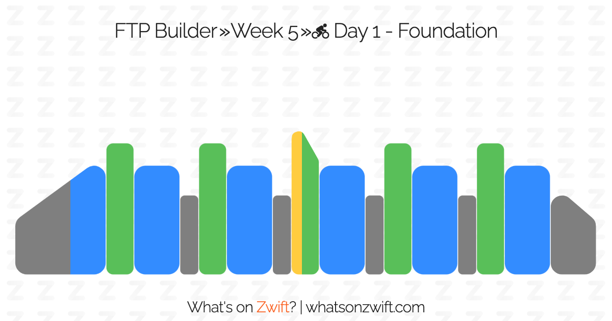

Heart Rate Notes
Table of Contents
Aerobic Base Building vs High Intensity Interval Training
I have been an intermediate-level In The Groove player for a few years now, it's fair to say that up to this point that it represents a relatively high proportion of my total exercise.
Recently I have been getting into Zwift, and at the time of writing (November 2024) have been resuming it after a period where I didn't have access to a frame for my smart trainer. In doing so I have noticed a peculiar thing about my fitness – namely, that my "zones" felt roughly the way they should have, but that my heart rate was extremely high for some unknown reason. I took a Lite version of the FTP Ramp Test which I was able to clear unexpectedly, and got this interesting comment from another cyclist.

I have noticed this being somewhat of a problem in orienting my rides. What feels to me like a comfortable, conversational pace with moderate effort will bring my heart rate to alarming levels (~160-170 bpm), which I seem to be able to sustain for longer than expected.
Dance Game Player as Athlete
As refresher, "heart rate zones" refer to efforts at the following rates:
| Zone | Rate |
|---|---|
| Zone 1 (Recovery) | 55%-65% Max |
| Zone 2 (Base) | 65%-75% Max |
| Zone 3 (Tempo) | 80%-85% Max |
| Zone 4 (Threshold) | 85%-88% Max |
| Zone 5 (Anaerobic) | 90% Max |
Dance game players have a very interesting athletic profile compared to most other sports, since virtually all of the work they do is at tempo / threshold / anerobic levels. What likely represents the best picture of this is Sereni's guide where they paid a sports coach to help them improve at ITG stamina. The coach told them to do most sessions at 120-140 heart rate (i.e. Zone 2 training) which corresponded to them playing 9 blocks below their max level.
This is fine: dance games are ultimately, at their core, interval training. Stamina especially, where the charts are mostly fully described by their density graphs which are almost identical in concept to their equivalents in cycling training plans


Dance game players could be roughly described as athletes who mostly exclusively do zone 3-5 work. Most score attack records are set at decidedly tempo heart rates (including in stamina) with high block passing scores usually involving maintaining 180+ heart rate for long periods. Recovering quickly during short rests + pushing yourself to maintain focus at higher heart rates is a big part of dance games. There are notable exceptions to this, e.g. iamchris4life maintaining 144 average heart rate for 7 hours, but largely it seems like the performance sweet spot for dance games tends to be at higher bpms.
However, this is in stark contrast to how athletes in other sports train. In cycling, roughly 70% of your time is spent training at zone 2 rates. In comparison it's quite rare to spend much time at all during ITG sets under ~150 heart rate except during explicit rests.
Misalignment
In cycling you can estimate how much power is required to put your heart rate in specific bands. This is done by associating a reference value (Functional Threshold Power, or FTP).
As a dance game player moving to cycling, I have noticed that my "zone 2 values" feel like they are often described ("conversational, moderate effort, sustainable") but correspond to very high values (e.g. 165+ bpm). I considered this somewhat alarming at first.
Form Concerns
A core result from Sereni's guide is that form cues are a large component of what reduces physical effort in ITG Stamina. That is: using an appropriate bar, keeping weight on your heels, keeping weight off the bar, and limiting range of motion.
To Read
High Intensity Interval Training Leads to Greater Improvements in Acute Heart Rate Recovery and Anaerobic Power as High Volume Low Intensity Training
https://www.frontiersin.org/journals/physiology/articles/10.3389/fphys.2017.00562/full
Impact of Training Intensity Distribution on Performance in Endurance Athletes
Effects of High Intensity Interval Training on Physical Performance in Female Team Sports: A Systematic Review
https://sportsmedicine-open.springeropen.com/articles/10.1186/s40798-023-00623-2
The Effects of High Intensity Interval Training vs Steady State Training on Aerobic and Anaerobic Capacity
https://pmc.ncbi.nlm.nih.gov/articles/PMC4657417/
Heart Rate Zones and High Intensity Interval Training in Collegiate Women Woccer Athletes
https://etda.libraries.psu.edu/files/final_submissions/10140